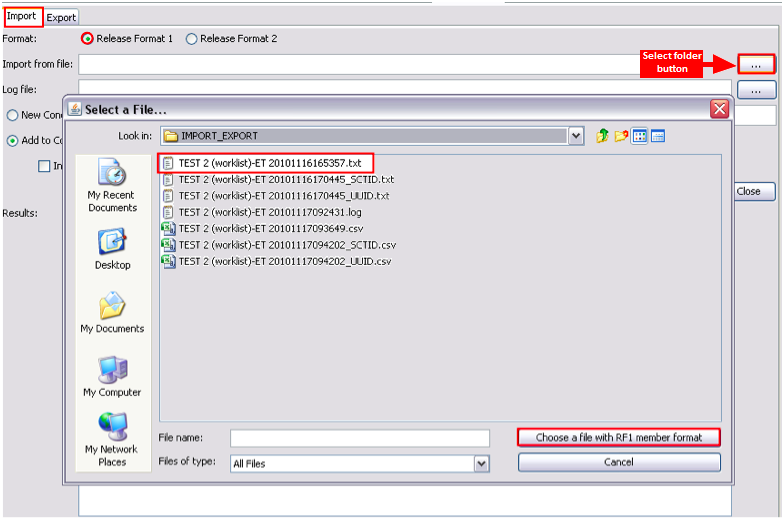
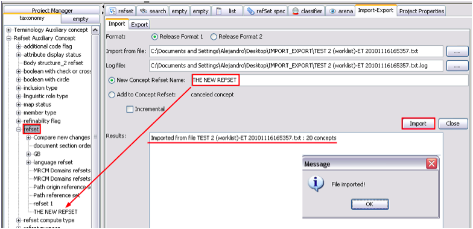
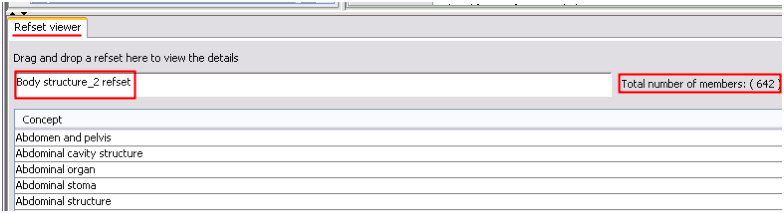
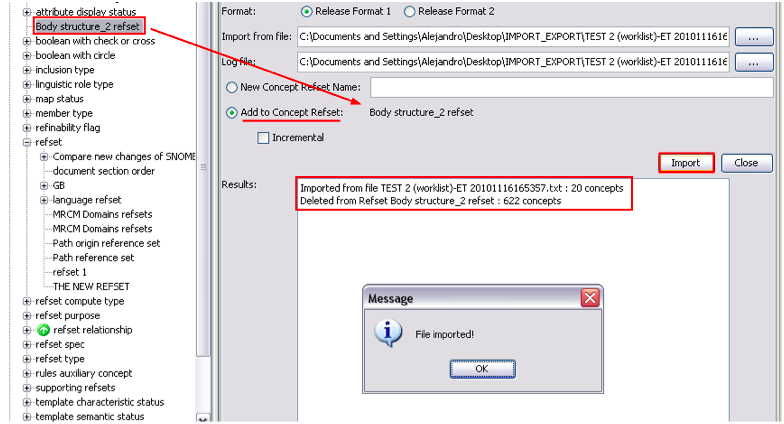
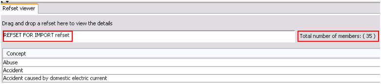
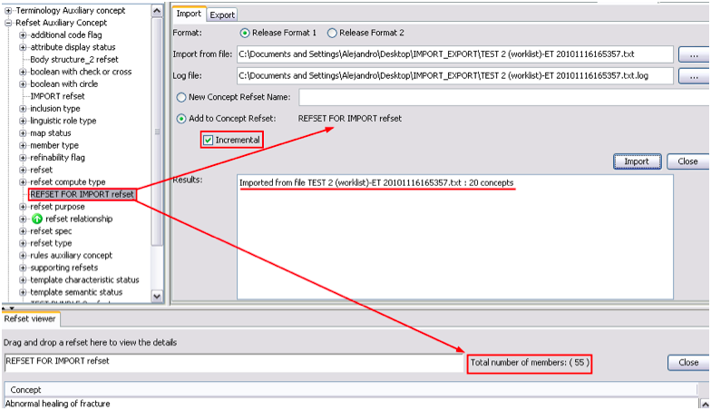

The screen is similar to the one displayed for Export function. In this case you should click
the Select folder button to select the folder from which you will import a file. All files
imported should be .txt files.
In the example shown, we have selected to import a RF1 file. Files ending with _SCTID.txt or
UUID.txt should have been chosen if RF2 were selected:

The user has the option to create a NEW concept refset: in thi case, you should specify a new
concept refset name and then click Import button:

If you decide to add your import to and existing concept refset, you should specify the
following:
- The refset where your selection will be added: drag and drop the chosen refset to the
‘Add to Concept Refset’ window.
- Specify whether your import will replace or not the content of the existing refset. If
the “Incremental” option remains unticked, your import will replace the content of the
existing refset:
- For this example, we will consider the refset “Body structure_2” , which has 642
members

- In this example you are importing the file TEST 2 (worklist)-ET 20101116165357.txt to
the refset “Body structure_2”. As you didn’t tick the Incremental option, the imported
file will replace the content of Body structure_2 refset.
- The Results window states that file TEST 2 (worklist)-ET 20101116165357.txt had 20
concepts that replaced 622 concepts of Body structure_2 refset. However, the original
Body structure_2 refset had 642 members. Why only 622 concepts were changed? Because the
20 concepts of file TEST 2 (worklist)-ET 20101116165357.txt already were in the Body
structure_2 refset and therefore, they were not deleted.
Specify that your import will be added to an existing refset by clicking the “Incremental”
option:
- We will consider refset “REFSET FOR IMPORT", which has 35 members, but now we will tick
the incremental option.

Now, your import will be added to the content of the existing refset, and you may verify this
after importing in the Refset Viewer: you will see that REFSET FOR IMPORT refset now has 55
members because the 20 concepts of TEST 2 (worklist)-ET 20101116165357.txt have been
added.
